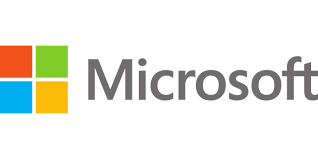
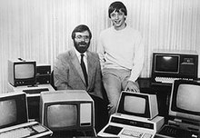

He is the founder of Microsoft.
Books Recommended By Bill Gates
|
Microsoft Corporation is an American multinational technology corporation headquartered in Redmond, Washington. Microsoft's best-known software products are the Windows line of operating systems, the Microsoft Office suite, and the Internet Explorer and Edge web browsers. Its flagship hardware products are the Xbox video game consoles and the Microsoft Surface lineup of touchscreen personal computers. Microsoft ranked No. 14 in the 2022 Fortune 500 rankings of the largest United States corporations by total revenue;[2] it was theworld's largest software maker by revenue as of 2022. It is considered as one of the Big Five American information technology companies, alongside Alphabet (parent company of Google), Amazon, Apple, and Meta (formerly Facebook).
Microsoft was founded by Bill Gates and Paul Allen on April 4, 1975, to develop and sell BASIC interpreters for the Altair 8800. It rose to dominate the personal computer operating system market with MS-DOS in the mid-1980s, followed by Windows. The company's 1986 initial public offering (IPO), and subsequent rise in its share price, created three billionaires and an estimated 12,000 millionaires among Microsoft employees. Since the 1990s, it has increasingly diversified from the operating system market and has made a number of corporate acquisitions, their largest being the acquisition of LinkedIn for $26.2 billion in December 2016,[3] followed by their acquisition of Skype Technologies for $8.5 billion in May 2011.[4]
